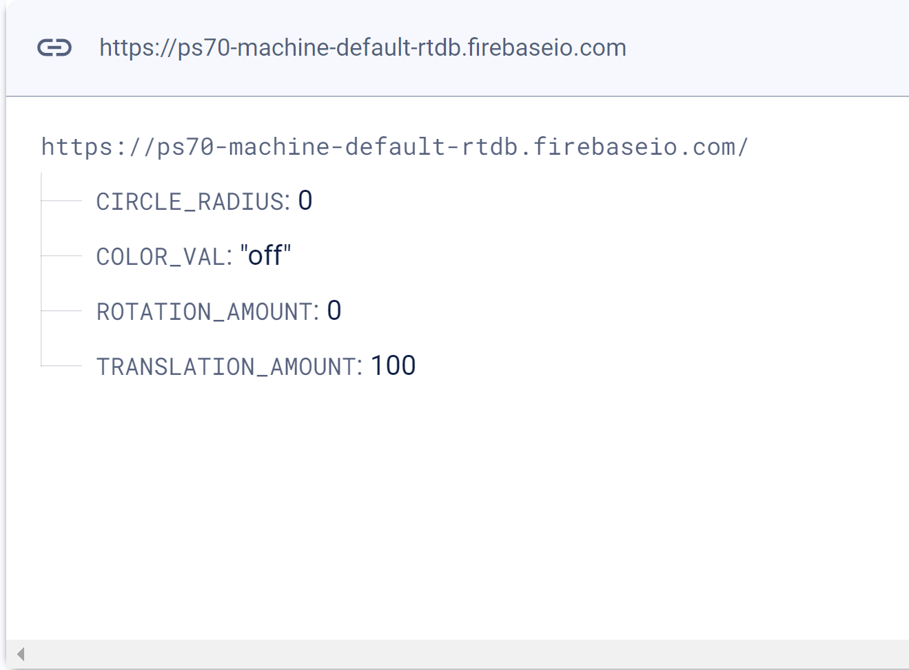

<div class="textcontainer">
<p class="margin"> </p>
<h3>Weeks 10-12: Machine Building</h3>
<h4>Assignment: Build a Drawing Robot</h4>
<p>Our project this week was inspired by the recent spring weather and <a href="https://geometrikz.github.io/PS70/blog/week_10/">Bobby’s sidewalk plotter</a> from last year. We combined these inspirations to arrive at: Sidewalk Chalk Drawing Roomba. The robot would dispense liquid chalk from an outlet in the middle of the circular base, and drive around on the sidewalk to draw a given design.</p><br>
<h5>End Effector</h5>
<p>The least technical part of this project was designing the chalk ink and how it would be dispensed. After trying a couple different chalk recipes (combinations of ground up chalk, water, and/or isopropyl alcohol), we settled on using a mixture of 1 part cornstarch to 3 parts water, plus a couple drops of dye.
We wanted to expand on the functionality of Bobby’s Roomba, so we decided to add the ability to draw with multiple colors. The plan was to make 2 different colored chalks that were stored in different bottles on the robot, whose tubing ran to a common Y connector. This way we could use either color or a mixture of both, giving us 3 color options.
We started with silicone tubing of 4.8mm outer diameter and 2.8mm inner diameter. We designed and 3D printed a custom Y connector to fit over the tubes, which we thought would allow for better flow than a T connector that connects inside the tubes. <a href="./y connector v1.stl" download>Download the STL file here!</a><br>
<p class="margin"></p>
<div class="flexrow">
<img src="y connector.jpeg" alt="" width="40%">
</div>
<p class="caption">Schematic of the end effector and chalk ink setup and CAD of Y connector</p><br>
To pump the liquid chalk from the bottles on the top level down to the Y connector, we used solenoid pumps attached to their respective tubes. They are wired to a motor driver and connected to 2 output pins each on the ESP board. The code for turning each color on and off is annotated in the final code below.
<h5>Construction</h5>
<p>The base is made of wood lasercut with holes distributed around the perimeter to thread wires through and connect the motor/wheel mounts. A hole in the very center of the base is where the Y connector sits. Like Bobby's group's, it has two levels, where the top level base has fewer holes to thread the silicone tubes through as we planned to put the liquid chalk bottles on the top level. Here are the <a href="./machine top v0.dxf" download>top</a> and <a href="./machine base v1.dxf" download>bottom</a> level dxf files to download.</p><br>
<div class="flexrow">
<img src="./robot base.png" alt="" width="40%">
<img src="./robot top level.png" alt="" width="40%">
</div>
<p class="caption">The CAD of the bottom and top levels</p>
<br>
To support the top level, we called upon the ancient technique of pillars, and 3D printed the following design <a href="https://www.printables.com/model/591027">courtesy of Printables.</a></p><br>
<br>
<p>We used two Nema 17 stepper motors with A4988 drivers, which came with an L-bracket mount to attach them to the base. We secured the mounts to the slits in the base using M5 bolts and nuts. The motors are attached to AOWESM 80mm 85A wheels, with a 3D printed adapter that we designed (<a href="./wheel-motor-joint v4.stl" download>downloadable here</a>). Support swivel wheels are attached to the opposite sides of the base to stabilize the chassis. We powered the robot with a 5 volt 10000mAh capacity battery with a power converter so it could be mobile. Below is everything pseudo-put together as described above:
<p class="margin"></p>
<div class="flexrow">
</div>
<h5>Motors</h5>
We used two Nema 17 stepper motors with A4988 drivers, wired according to this diagram:
<p class="margin"></p>
<div class="flexrow">
<img src="Motor Schematic Diagram.png" alt="" width="40%">
<img src="Motor Circuit Connection.png" width="40%">
</div>
The code for moving the motors using the AccelStepper library is included in the full integrated code below.<br>
<br>
<h5>Input Website</h5>
To control the robot, we decided to create an html site with drawing options that connects to a Firebase database, which sends commands to the ESP32(Wroom on a dev board). <a href="https://rsfarnsworth.github.io/PS70/10/current_firebase.html">Here is the site</a>, and below is what the Firebase RTDB stores and sends to the onboard microcontroller to draw a circle, change color, and translate a given distance:
<p class="margin"></p>
<div class="flexrow">

</div>
<h5>Microcontroller Code</h5>
After <em>many</em> hours of troubleshooting, we landed on this code that integrates commands from the Firebase RTDB to specify which color is dispensed and where to drive. For the Firebase-html-ESP communication, we used Nathan's tutorial from Networking Week. We used parts of Bobby's group's code as a guide, but didn't use the gyroscope or p5 canvas interface, instead using a simpler step-by-step input from our website.<br>
<!DOCTYPE html>
<html lang="en">
<head>
<meta charset="UTF-8">
<meta name="viewport" content="width=device-width, initial-scale=1.0">
<title>Scrollable Code Box</title>
<style>
/* Style for the scrollable box */
.code-box {
overflow-x: auto; /* Horizontal scrollbar if needed */
white-space: pre-wrap; /* Preserve line breaks */
border: 1px solid #ccc; /* Border around the box */
padding: 10px; /* Padding inside the box */
margin-bottom: 20px; /* Margin to separate from other elements */
max-height: 400px; /* Maximum height of the box */
}
/* Style for the code inside the box */
.code {
font-family: monospace; /* Use monospace font for code */
font-size: 14px; /* Adjust font size as needed */
color: #333; /* Text color */
}
</style>
</head>
<body>
<!-- Scrollable box containing code snippet -->
<div class="code-box">
<pre class="code">
<code>
#include <AccelStepper.h>
//code for connecting to firebase/controls
//control website: https://rsfarnsworth.github.io/PS70/10/current_firebase.html
#include <Arduino.h>
#if defined(ESP32)
#include <WiFi.h>
#elif defined(ESP8266)
#include <ESP8266WiFi.h>
#endif
#include <Firebase_ESP_Client.h>
//Provide the token generation process info.
#include "addons/TokenHelper.h"
//Provide the RTDB payload printing info and other helper functions.
#include "addons/RTDBHelper.h"
// Insert your network credentials but take them out when you put them online
#define WIFI_SSID "INSERT WIFI"
#define WIFI_PASSWORD "INSERT PASSWORD"
// Insert Firebase project API Key
#define API_KEY "INSERT API KEY"
// Insert RTDB URLefine the RTDB URL /
#define DATABASE_URL "ps70-machine-default-rtdb.firebaseio.com"
//Define Firebase Data object
FirebaseData fbdo;
FirebaseAuth auth;
FirebaseConfig config;
unsigned long sendDataPrevMillis = 0;
int intValue;
float floatValue;
bool signupOK = false;
int dist2transl;
int dist2rot;
int circ_rad;
String color;
// Motor pin definitions
#define MOTOR1_STEP_PIN 14
#define MOTOR1_DIR_PIN 12
#define MOTOR2_STEP_PIN 25
#define MOTOR2_DIR_PIN 26
int motor1_pin1 = 32;
int motor1_pin2 = 33;
int motor2_pin1 = 19;
int motor2_pin2 = 23;
// Initialize two stepper objects
AccelStepper stepper1(AccelStepper::DRIVER, MOTOR1_STEP_PIN, MOTOR1_DIR_PIN);
AccelStepper stepper2(AccelStepper::DRIVER, MOTOR2_STEP_PIN, MOTOR2_DIR_PIN);
void setup() {
pinMode(motor1_pin1, OUTPUT);
pinMode(motor1_pin2, OUTPUT);
pinMode(motor2_pin1, OUTPUT);
pinMode(motor2_pin2, OUTPUT);
digitalWrite(motor1_pin1, LOW);
digitalWrite(motor1_pin2, LOW);
digitalWrite(motor2_pin1, HIGH);
digitalWrite(motor2_pin2, HIGH);
Serial.begin(115200);
WiFi.begin(WIFI_SSID, WIFI_PASSWORD);
Serial.print("Connecting to Wi-Fi");
while (WiFi.status() != WL_CONNECTED) {
Serial.print(".");
delay(300);
}
Serial.println();
Serial.print("Connected with IP: ");
Serial.println(WiFi.localIP());
Serial.println();
config.api_key = API_KEY;
config.database_url = DATABASE_URL;
if (Firebase.signUp(&config, &auth, "", "")) {
Serial.println("firebase");
signupOK = true;
}
else {
Serial.printf("%s\n", config.signer.signupError.message.c_str());
}
config.token_status_callback = tokenStatusCallback; //see addons/TokenHelper.h
Firebase.begin(&config, &auth);
Firebase.reconnectWiFi(true);
Firebase.RTDB.setInt(&fbdo, "/TRANSLATION_AMOUNT", 0);
Firebase.RTDB.setInt(&fbdo, "/ROTATION_AMOUNT", 0);
Firebase.RTDB.setInt(&fbdo, "/CIRCLE_RADIUS", 0);
// Set up the maximum speed and acceleration for both motors
stepper1.setMaxSpeed(100); // speed can be adjusted as necessary
stepper1.setAcceleration(100);
stepper2.setMaxSpeed(100);
stepper2.setAcceleration(100);
}
void loop() {
dist2transl = Firebase.RTDB.getInt(&fbdo, "/TRANSLATION_AMOUNT");
dist2transl = fbdo.to<int>();
dist2rot = Firebase.RTDB.getInt(&fbdo, "/ROTATION_AMOUNT");
dist2rot = fbdo.to<int>();
circ_rad = Firebase.RTDB.getInt(&fbdo, "/CIRCLE_RADIUS"); // get led status input from firebase
circ_rad = fbdo.to<int>(); // get led status input from firebase
color = Firebase.RTDB.getString(&fbdo, "/COLOR_VAL"); // change to e.g. intData() or boolData()
color = fbdo.to<String>();
while (dist2transl != 0) {
// To rotate the car in place, we set one motor to move forward and the other to move backward
int steps = int(dist2transl * (200/(80*PI)));
stepper1.move(steps); // motor 1 moves forward
stepper2.move(-steps);
// Wait until both motors reach their target positions
while ((stepper1.distanceToGo() != 0) || (stepper2.distanceToGo() != 0)) {
stepper1.run();
stepper2.run();
if (color == "color1") {
digitalWrite(motor1_pin1, HIGH);
digitalWrite(motor1_pin2, LOW);
digitalWrite(motor2_pin1, LOW);
digitalWrite(motor2_pin2, LOW);
}
else if (color == "color2") {
digitalWrite(motor2_pin1, HIGH);
digitalWrite(motor2_pin2, LOW);
digitalWrite(motor1_pin1, LOW);
digitalWrite(motor1_pin2, LOW);
}
else if (color == "mix") {
digitalWrite(motor1_pin1, HIGH);
digitalWrite(motor1_pin2, LOW);
digitalWrite(motor2_pin1, HIGH);
digitalWrite(motor2_pin2, LOW);
}
else if (color == "off") {
digitalWrite(motor1_pin1, LOW);
digitalWrite(motor1_pin2, LOW);
digitalWrite(motor2_pin1, LOW);
digitalWrite(motor2_pin2, LOW);
}
}
dist2transl = 0;
Firebase.RTDB.setInt(&fbdo, "/TRANSLATION_AMOUNT", 0);
digitalWrite(motor1_pin1, LOW);
digitalWrite(motor1_pin2, LOW);
digitalWrite(motor2_pin1, LOW);
digitalWrite(motor2_pin2, LOW);
}
while (dist2rot != 0) {
if (dist2rot >0 ){
// To rotate the car in place, we set one motor to move forward and the other to move backward
//int steps = int((dist2rot/360)*304.8*2 * (200/(80*PI)));
int factor = (2*PI*304.8* (200/(80*PI)))/360;
int steps = factor*dist2rot;
stepper1.move(steps); // motor 1 moves forward
stepper2.move(0);
// Wait until both motors reach their target positions
while ((stepper1.distanceToGo() != 0)) {
stepper1.run();
if (color == "color1") {
digitalWrite(motor1_pin1, HIGH);
digitalWrite(motor1_pin2, LOW);
digitalWrite(motor2_pin1, LOW);
digitalWrite(motor2_pin2, LOW);
}
else if (color == "color2") {
digitalWrite(motor2_pin1, HIGH);
digitalWrite(motor2_pin2, LOW);
digitalWrite(motor1_pin1, LOW);
digitalWrite(motor1_pin2, LOW);
}
else if (color == "mix") {
digitalWrite(motor1_pin1, HIGH);
digitalWrite(motor1_pin2, LOW);
digitalWrite(motor2_pin1, HIGH);
digitalWrite(motor2_pin2, LOW);
}
else if (color == "off") {
digitalWrite(motor1_pin1, LOW);
digitalWrite(motor1_pin2, LOW);
digitalWrite(motor2_pin1, LOW);
digitalWrite(motor2_pin2, LOW);
}
}
dist2rot = 0;
Firebase.RTDB.setInt(&fbdo, "/ROTATION_AMOUNT", 0);
digitalWrite(motor1_pin1, LOW);
digitalWrite(motor1_pin2, LOW);
digitalWrite(motor2_pin1, LOW);
digitalWrite(motor2_pin2, LOW);
}
if (dist2rot < 0 ){
// To rotate the car in place, we set one motor to move forward and the other to move backward
//int steps = int((dist2rot/360)*304.8*2 * (200/(80*PI)));
int factor = (2*PI*304.8* (200/(80*PI)))/360;
int steps = factor*dist2rot;
stepper1.move(0); // motor 1 moves forward
stepper2.move(steps);
// Wait until both motors reach their target positions
while ((stepper2.distanceToGo() != 0)) {
stepper2.run();
if (color == "color1") {
digitalWrite(motor1_pin1, HIGH);
digitalWrite(motor1_pin2, LOW);
digitalWrite(motor2_pin1, LOW);
digitalWrite(motor2_pin2, LOW);
}
else if (color == "color2") {
digitalWrite(motor2_pin1, HIGH);
digitalWrite(motor2_pin2, LOW);
digitalWrite(motor1_pin1, LOW);
digitalWrite(motor1_pin2, LOW);
}
else if (color == "mix") {
digitalWrite(motor1_pin1, HIGH);
digitalWrite(motor1_pin2, LOW);
digitalWrite(motor2_pin1, HIGH);
digitalWrite(motor2_pin2, LOW);
}
else if (color == "off") {
digitalWrite(motor1_pin1, LOW);
digitalWrite(motor1_pin2, LOW);
digitalWrite(motor2_pin1, LOW);
digitalWrite(motor2_pin2, LOW);
}
}
dist2rot = 0;
Firebase.RTDB.setInt(&fbdo, "/ROTATION_AMOUNT", 0);
digitalWrite(motor1_pin1, LOW);
digitalWrite(motor1_pin2, LOW);
digitalWrite(motor2_pin1, LOW);
digitalWrite(motor2_pin2, LOW);
}
}
while (circ_rad != 0) {
// To rotate the car in place, we set one motor to move forward and the other to move backward
int factor = (2*PI*304.8* (200/(80*PI)))/360;
int steps = factor*dist2rot;
stepper1.move(0); // motor 1 moves forward
stepper2.move(steps);
//int rate = (2*PI*152.4*200/(80*PI))/(2*PI*)
stepper2.setMaxSpeed(100);
stepper2.setAcceleration(100);
// Wait until both motors reach their target positions
}
}
</code>
</pre>
</div>
<h5>Demo Video!</h5>
<a href="https://www.youtube.com/watch?v=kJ8SLibc8H4">Click here to watch on Youtube</a>
<head>
<meta charset="UTF-8">
<meta name="viewport" content="width=device-width, initial-scale=1.0">
<title>Embedded YouTube Video</title>
</head>
<body>
<div class="flex-container">
<iframe width="560" height="315" src="https://www.youtube.com/watch?v=kJ8SLibc8H4" frameborder="0" allowfullscreen></iframe>
</div>
<head>
<meta charset="UTF-8">
<meta name="viewport" content="width=device-width, initial-scale=1.0">
<title>Video in Flex Row</title>
<style>
.flex-container {
display: flex;
justify-content: center;
align-items: center;
}
video {
width: 50%;
height: auto;
}
</style>
</head>
<body>
<br>
<h6>Unwired/mobile robot demo</h6>
<div class="flex-container">
<video controls>
<source src="mobile robot.mov" type="video/mp4">
</video>
</div>
</html>
<h6>Final demo in class</h6>
<div class="flex-container">
<video controls>
<source src="final demo.mov" type="video/mp4">
</video>
<video controls>
<source src="final demo2.MOV" type="video/mp4">
</video>
</div>
</html>
<br>
<h5>Future iterations</h5>
One idea we had during the process was to drive the robot remotely like an RC car, but opted for a simpler driving system with the html website. Now that we mostly have the code for the circle, rotation, and line functionalities figured out, this could be our next iteration so that the user could do a freestyle drawing with greater ease.
</div>